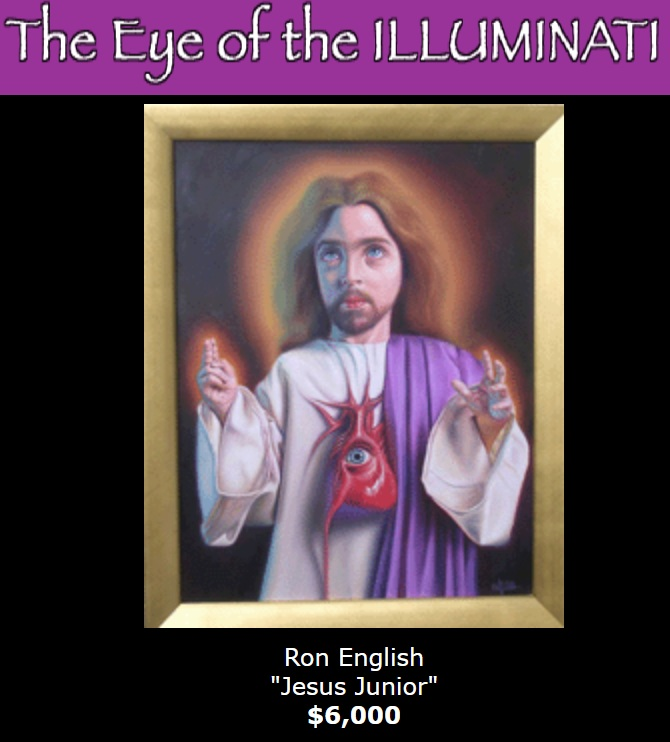

Literature
Ron English, Son of Pop: Ron English Paints His Progeny (San Francisco, California: 9mm Books and The Shooting Gallery, 2007), p. 18. ISBN 978-0976632511.
Ron English, Abject Expressionism: The Art of Ron English (San Francisco: Last Gasp, 2007), p. 137. ISBN 978-0867196894.
Notes
In Son of Pop, this work was erroneously reported as 36 × 18 inches.
This work appears on Copro/Nason’s exhibition page for Eye of the Illuminati, where it is listed as Jesus Junior.
Ancillary Documentation
The following material documents the work’s appearance on Copro/Nason’s exhibition page for Eye of the Illuminati.
